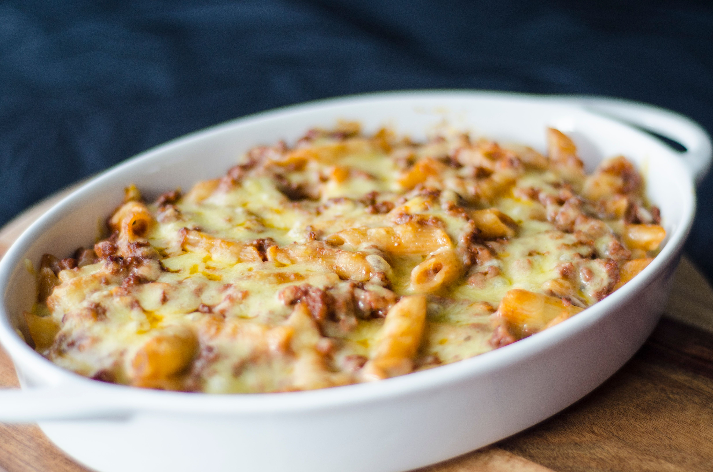

Italian Casserole Recipe
Recipe Description
This is a delicious and hearty Italian casserole that's perfect for the family. This dish is easy to make and reminds you of the flavors of Italy. Almost reminds me of a lasagna, but with the flair of your local pizzaria. Below, you'll find the ingredients and instructions to make this tasty concoction. Buona visione!
Ingredients
- 1 lb rigatoni pasta
- 1 lb ground beef
- 1 lb Italian sausage
- 2 (32 oz) jars speghetti sauce
- 1 (8 oz) can mushrooms, drained
- 1.5 lbs shredded mozzarella cheese
- thinly sliced pepperoni to taste
Steps
- Preheat the oven to 375°F (190°C).
- Bring a large pot of lightly salted water to a boil. Cook the rigatoni in the boiling water, stirring occasionally, until tender yet firm to the bite, 8 to 10 minutes. Drain and set aside.
- Meanwhile, brown the ground beef and Italian sausage in a large skillet over medium heat; transfer to a baking dish until slotted a spoon. Stir spaghetti sauce, mushrooms, and rigatoni into beef and sauage mixture. Sprinkle mozzarella cheese on top.
- Place the baking dish into the preheated oven and bake for 20-25 minutes, or until the cheese is melted and golden.
- Enjoy!

Home